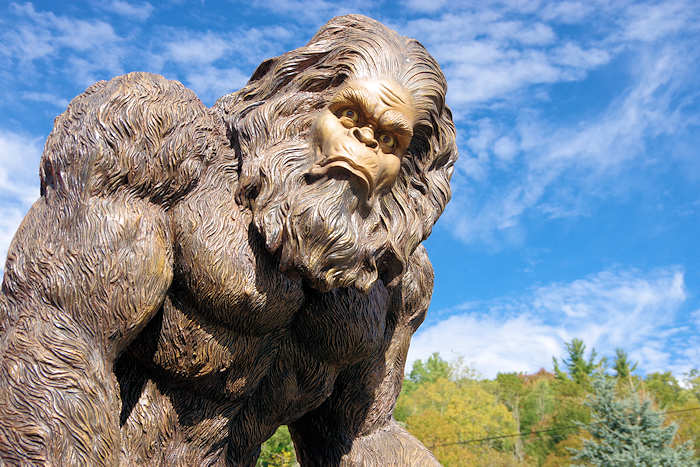

In North American folklore, Bigfoot or Sasquatch are said to be hairy, upright-walking, ape-like creatures that dwell in the wilderness and leave footprints. Depictions often portray them as a missing link between humans and human ancestors or other great apes. They are strongly associated with the Pacific Northwest (particularly Oregon, Washington and British Columbia), and individuals claim to see the creatures across North America. Over the years, these creatures have inspired numerous commercial ventures and hoaxes. The plural nouns 'Bigfoots' and 'Bigfeet' are both acceptable. Folklorists trace the figure of Bigfoot to a combination of factors and sources, including folklore surrounding the European wild man figure, folk belief among Native Americans and loggers, and a cultural increase in environmental concerns. A majority of mainstream scientists have historically discounted the existence of Bigfoot, considering it to be a combination of folklore, misidentification, and hoax, rather than living animals. A minority, such as anthropologists Grover Krantz and Jeffrey Meldrum, have expressed belief in the creatures' existence.
